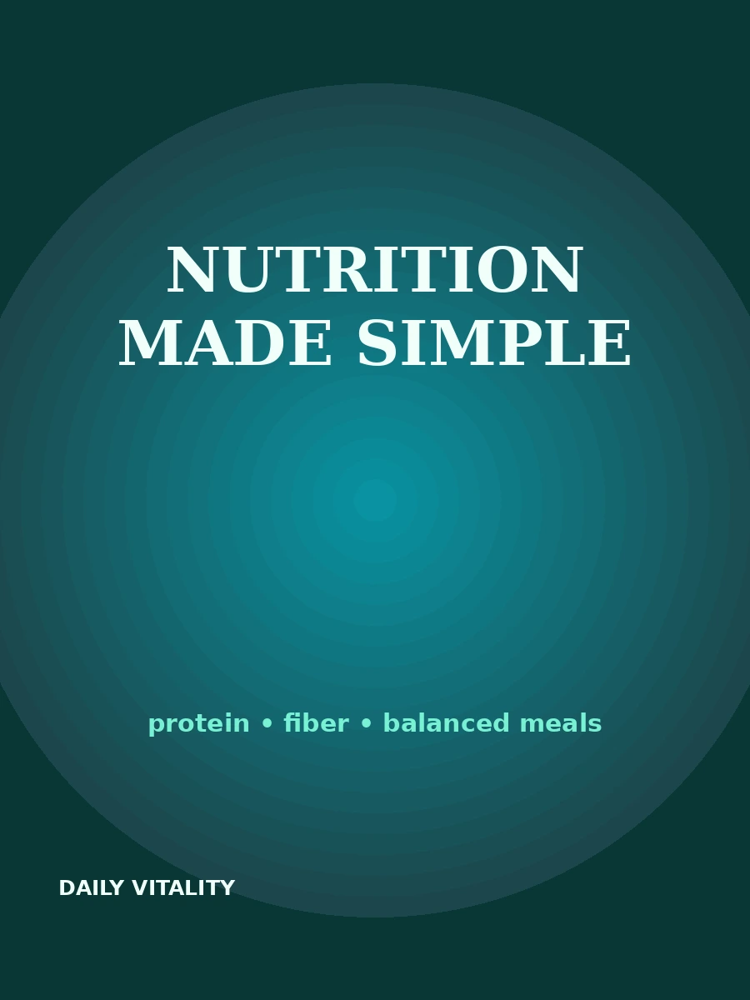

Open a book and read it directly in your browser. No download button is provided.
A 14-day practical reset covering sleep, movement, hydration, meals and stress.

A friendly guide to protein, fiber, balanced meals, food labels and sustainable eating.